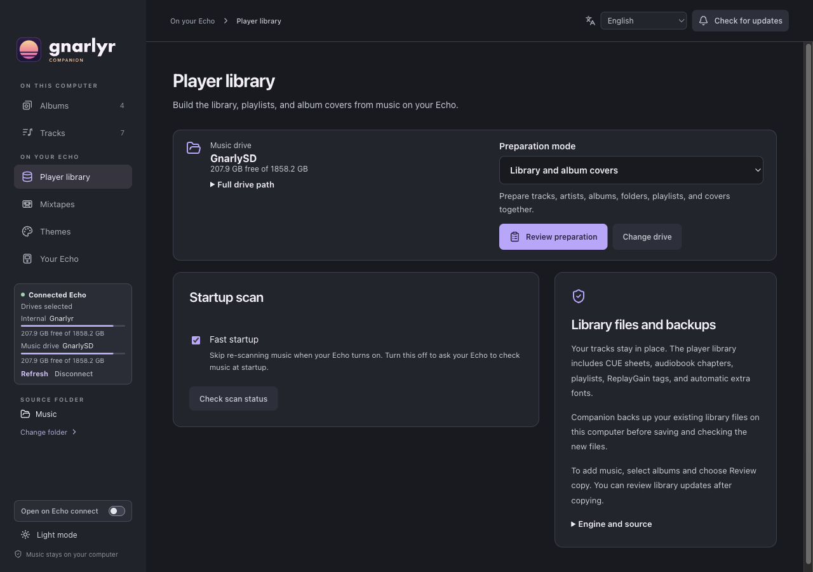
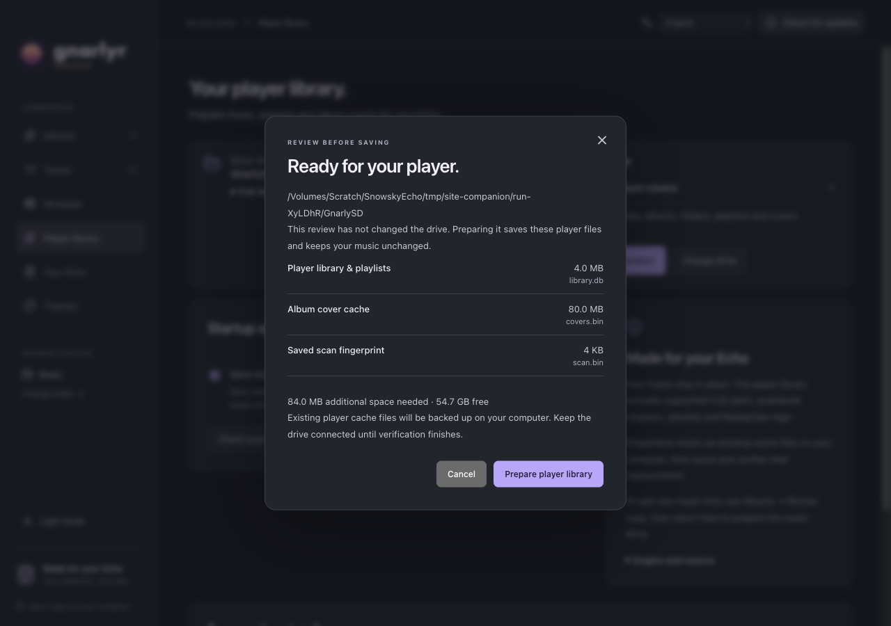
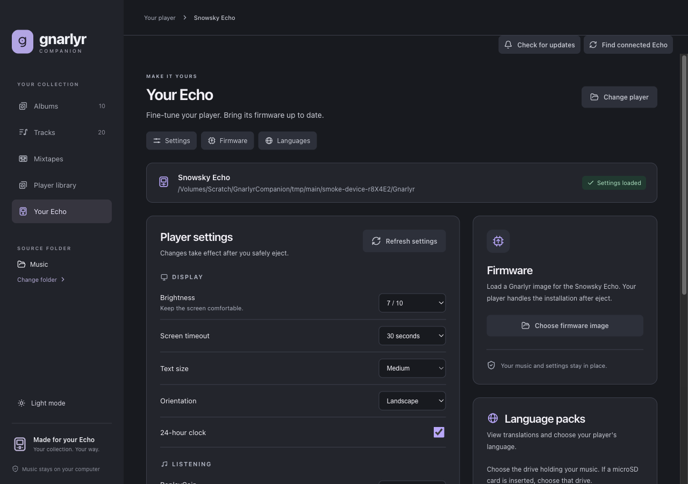
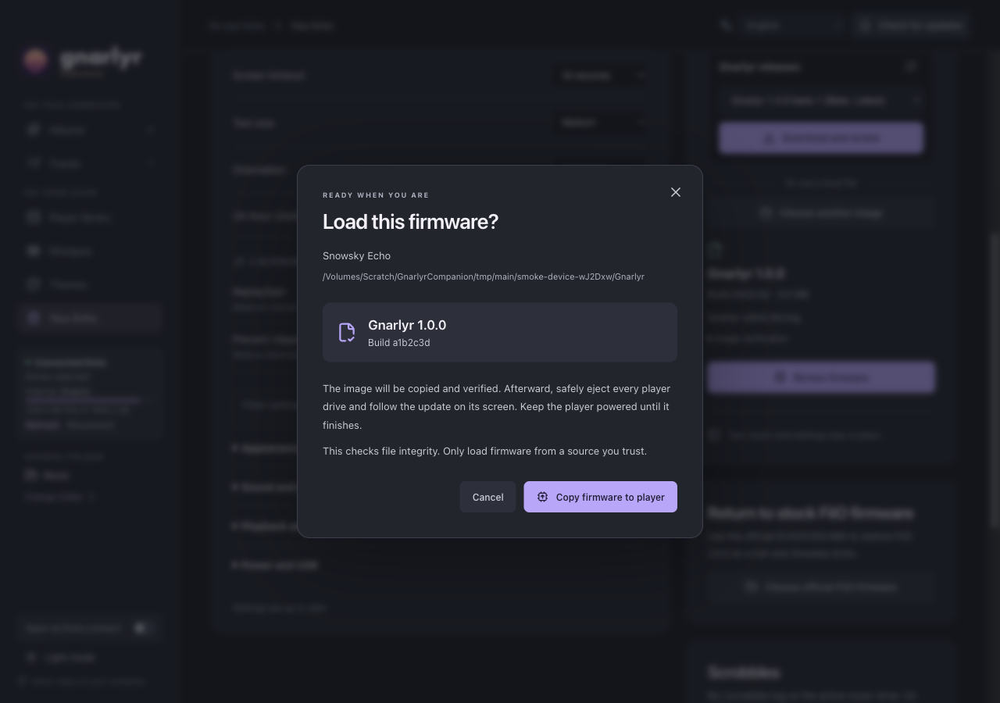
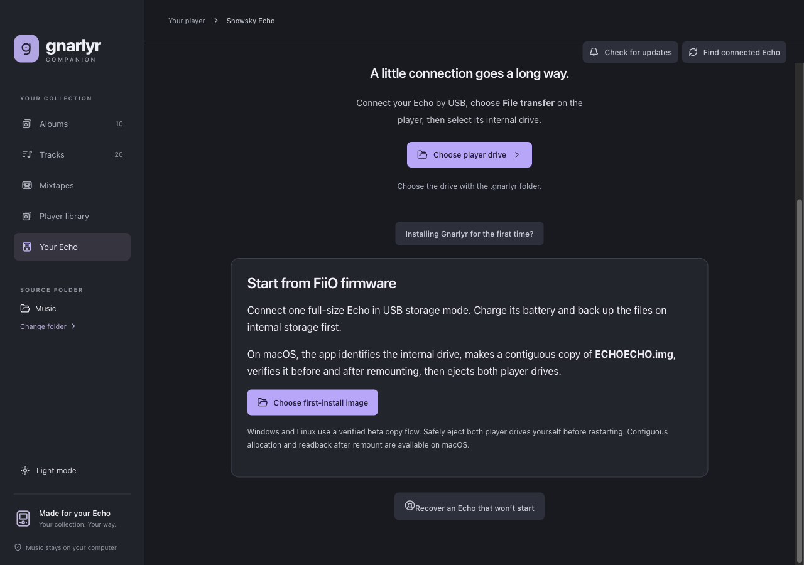
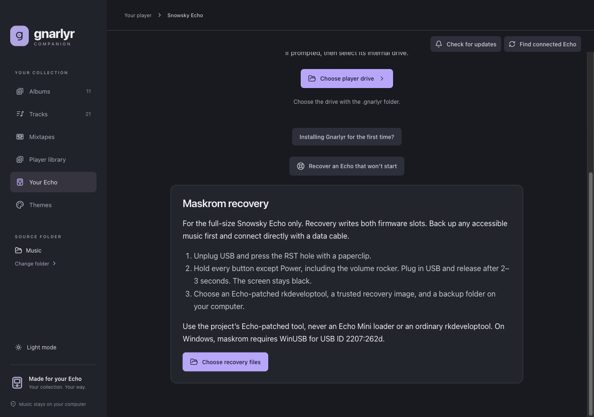
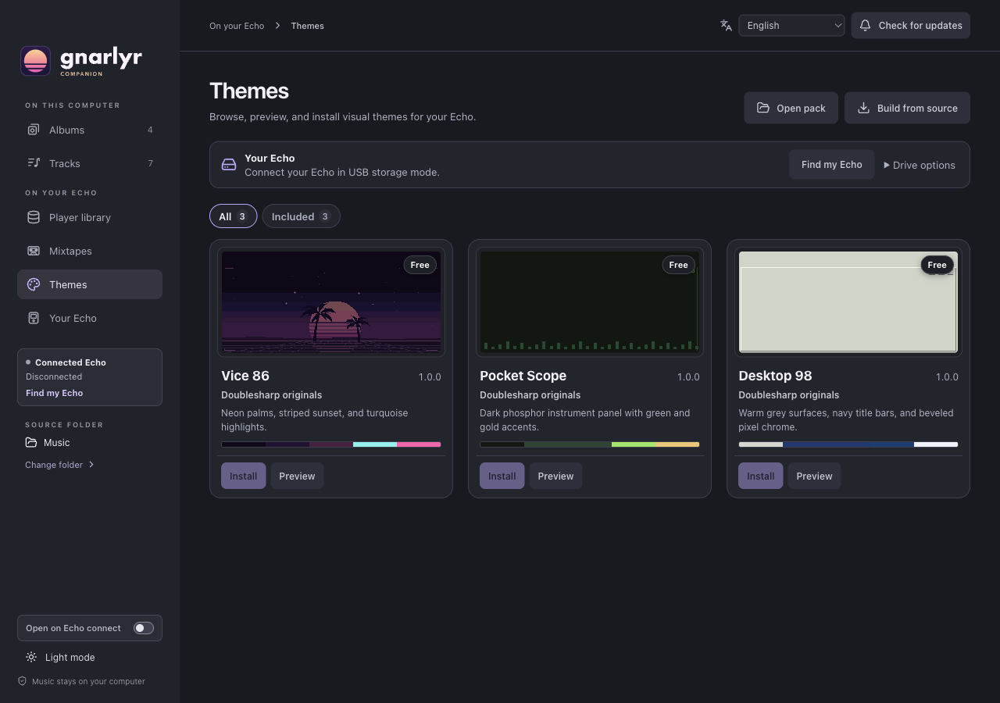
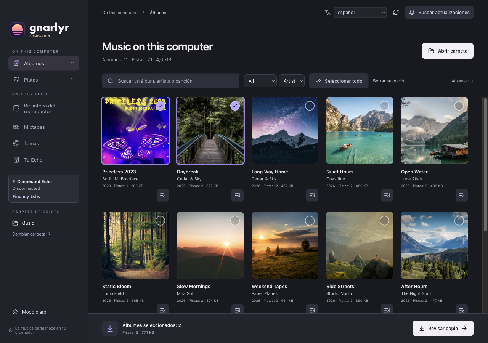
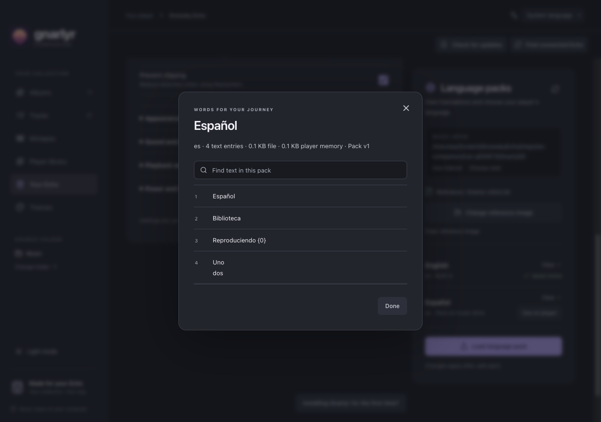

Find an album
Search by album, artist, or song. Artwork comes from your music; albums without a cover get an initials design.
Desktop beta · 1.0.0-beta.3
Browse local music, prepare your player’s library, and manage Gnarlyr settings from your computer.
Sample music and player data.

Choose a music folder and browse it as albums or tracks. Your files stay in their original folders.
Search by album, artist, or song. Artwork comes from your music; albums without a cover get an initials design.
Choose individual albums or select your search results. Reopening restores your saved library and selections; Refresh checks for changed music.
Browse the music you own, offline. You can also copy music with your computer’s file manager.
The companion keeps a local catalogue so it can reopen your albums without reading every music file again.
Refresh scans in the background, shows progress, and reuses metadata for unchanged tracks. Cancel scan stops the refresh and leaves the previous library available. Your music folders stay unchanged.
Choose albums, select Review copy, and choose the destination music drive. The review shows missing tracks, files already there, conflicts, and the space needed.

Cancel keeps completed, verified files. Choose Review copy again to finish the remaining tracks. A disconnected drive or changed selection needs a fresh review; conflicting files are left for you to resolve. Safely eject every player drive after copying.
Prepare the music library and album covers on your computer, with no separate tools to install. In Player library, choose the microSD drive, select a preparation mode, and review the work.

Choose Library and album covers, Library only, or Album covers only. The review shows the cache files and required space before saving. The scan summary lists tracks, playlists, missing artwork, and metadata warnings. Confirm Prepare player library to write and verify the caches. Existing caches get a backup on your computer; music files and tags stay unchanged. Check scan status compares the music with the saved scan without writing.

When both drives belong to the same USB player, preparation includes internal music in the library on the card. The review shows the detected internal drive. You can also prepare a card in a reader; the player checks internal music when the card returns. Preparation writes to the card and leaves internal storage unchanged.
After a music copy, Prepare player library opens this screen with that destination selected. Review again before preparing, keep the drive connected until the operation finishes, and safely eject every player drive.
Create an ordered mixtape or a C60/C90 cassette from songs already on your player’s music drive. Keep repeated songs, reorder the sequence, and move tracks between sides.

Keep up to 32 saved mixes. Rename or delete a mix without removing its music. Cassette saves check each side’s time against the files on the drive; missing songs or unknown durations need resolving first.
For a player already running Gnarlyr, connect in Connect to computer mode and choose its internal drive in Your Echo.

Choose the theme, accent color, text size, orientation, and any of the four Now Playing styles. Adjust EQ, ReplayGain, crossfeed, playback speed, shuffle, repeat, and saved volume levels. Set USB behavior, standby, resume rewind, startup volume limits, and the start/stop animation. The form shows the controls supported by the player’s saved settings. Review changes before saving; the companion keeps a computer backup and verifies the saved file. Safely eject every player drive to apply the changes.
If a drive disconnects, reconnect it and refresh the player. Compatible draft edits stay in place; fields unavailable in the refreshed settings are removed from the draft. The review uses the same setting labels as the form.
Choose a trusted local Gnarlyr image. The companion checks its format and checksum, shows the version and build, and can copy it to internal storage with a readback check. The player installs it after safe eject.

For later updates, choose the downloaded ECHOECHO.img; the companion checks its contents and stages the file for Gnarlyr’s updater. Follow the update and confirmation steps after copying.
For a Snowsky ECHO running FiiO firmware, open Your Echo → Installing Gnarlyr for the first time?

Charge the player, back up its internal files, and connect it in USB storage mode. Choose a trusted ECHOECHO.img and review the detected player. On macOS, the app makes a contiguous copy, verifies it before and after remounting, and ejects the player’s drives.
On Windows and Linux, the beta checks the copied file and leaves ejection to you. The contiguous-copy and remount checks are available on macOS. After ejection, unplug USB and fully power off/on. Let installation and the first library scan finish, then check Settings → About. The normal file-copy route is also available.
The companion checks the official GitHub releases at startup. Check for updates runs another check. A newer app gets an update notice; a firmware release gets a link to its notes so you can compare it with Settings → About on the ECHO.
Dismiss a notice until the next release, or check again to bring it back. Downloads and installation stay under your control. Local music and player tools remain available offline.
Open Your Echo → Recover an Echo that won’t start. Choose a trusted ECHO-patched rkdeveloptool, a Gnarlyr image or the supported official FiiO 2.0.0 image, and a backup folder on your computer.

After you confirm the detected Snowsky ECHO and the trusted recovery tool, the app reads both firmware slots twice into a private backup and compares them. It writes slot 2 and verifies the readback, then does the same for slot 1. Both must match before it sends a restart.
Keep at least 320 MiB free for retained backups and readbacks. The recovery executable and any USB drivers must be installed separately; Windows needs WinUSB for the maskrom device. Recovery remains experimental on Linux and Windows. Follow the ECHO recovery guide for the button sequence and exact tool requirements.
An interrupted-session message means a recovery process may still be active. Keep the backup. Close all recovery apps and tools, then restart the computer. Disconnect the player, press RST, and enter maskrom again.
Remove only the session-lock file named in the message, then review a fresh recovery attempt. Never remove that file while recovery is running.
gnarlyr:// links from Theme Studio to bring a shared palette and style into Companion. Ed25519ph signature verification identifies packs signed by a trusted key..scrobbler.log exported from Home → Recap → Export plays to view listening history from your ECHO.Browse Vice 86, Pocket Scope, and Desktop 98 in Themes. Open or drop a .gtheme file, or choose Build from source to compile a version 2 pack from a local theme folder. Building and previews work offline, with no player connected.

For installation, connect your ECHO in USB storage mode and choose Find my Echo (or pick drives manually under Drive options). Companion reads installed packs, shows which theme is active on your player, verifies every installed file, and keeps a copy on your computer. Removal is limited to packs installed and recorded by Companion.
After ejecting your ECHO, open Settings → Display & text → Theme on the player to preview and select the pack. See custom theme screenshots and learn how to make your own →
Choose from 13 built-in interface languages, available offline.
The app uses your computer’s first supported language or falls back to English. Choose App language in the top bar to switch immediately. Your choice is saved for the next time you open the app.
Included languages are Afrikaans, Arabic, Bengali, Brazilian Portuguese, English, French, German, Hindi, Japanese, Russian, Simplified Chinese, Spanish, and Ukrainian. Text without a translation appears in English.

For the ECHO itself, use the player language controls below.
View translated text, check a language pack, and choose which language the player uses.

Unavailable language controls explain which drive or firmware image to select first.
Download any of the six official language packs (Deutsch, Español, Français, 日本語, Português, 简体中文) directly from GitHub in one click inside Companion, or import a custom version 1 .pack file built with the browser language-pack builder.
Choose light or dark mode. The companion remembers the appearance you prefer, and a wireframe ECHO opens and closes the app.
Choose the installer for your computer. Verify each download against SHA256SUMS on its release page.
Desktop beta
Companion checks GitHub Releases for Gnarlyr firmware and official language packs, verifies files before copying, and keeps local backups of your player settings and mixes.